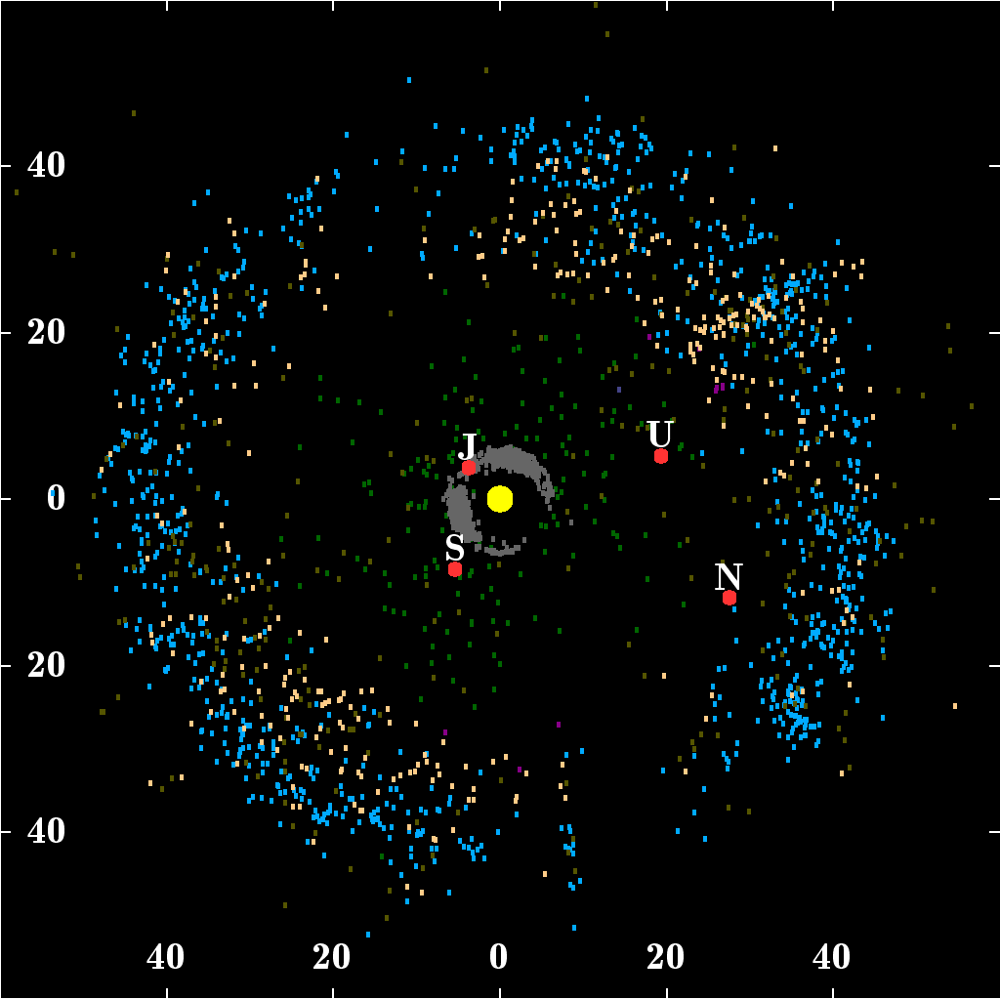

SNU Universe > Galaxies > Kuiper belt >
Location: ~50AU (Astronomical Units) from MilkyWay/Earth
Select a planet or star
Sun (galaxy preferred name: not yet set)
Unknown (galaxy preferred name: not yet set)
Other planets/stars not yet discovered
View older versions of this page
Snapshots 1 to 10
Snapshot 1 (December 3rd 2019)
Snapshot 2 (December 5th 2019)
Snapshot 3
Snapshot 4
Snapshot 5
Snapshot 6
Snapshot 7
Snapshot 8
Snapshot 9
Snapshot 10
Snapshots 11 to 20
Snapshot 11
Snapshot 12
Snapshot 13
Snapshot 14
Snapshot 15
Snapshot 16
Snapshot 17
Snapshot 18
Snapshot 19
Snapshot 20
You have reached the bottom of this page.